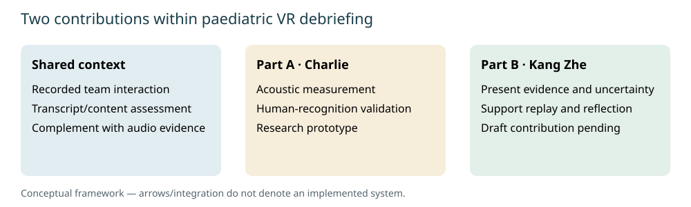
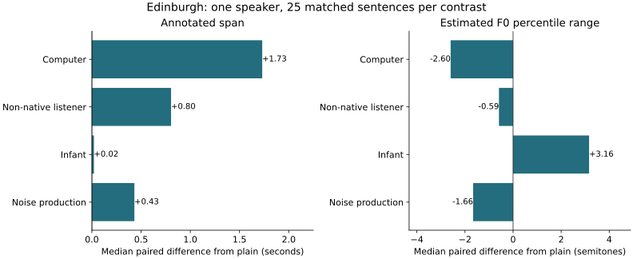
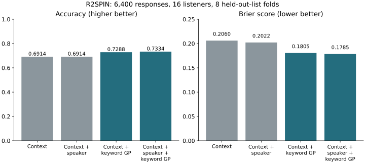

1. Shared context and problem
Paediatric emergency teams must exchange instructions and coordinate actions. Consider the hypothetical instruction, “Bring the paediatric airway trolley.” A transcript could preserve every word while a teammate struggles to recognise the spoken instruction because of delivery or background noise. This hypothetical example is not an observed incident. AHRQ's TeamSTEPPS check-back framework verifies exchanged information through acknowledgement and confirmation; it addresses communication behaviour rather than acoustic intelligibility. [14]
Our project investigates speech assessment and feedback within paediatric VR training. The existing project-described content/teamwork assessment examines messages and interactions; Charlie's complementary research asks whether measured delivery adds information about human recognition. The gap is a validated delivery–recognition relationship here; we have not re-audited the deployed pipeline or assumed it ignores audio.
Bent et al. found reduced recognition in both hospital and speech-shaped noise among 69 listeners. Sohlin et al.'s 24-professional paediatric VR pilot supports the training context, not our acoustic assessment. [8] [15] Charlie contributes speech analysis; Kang Zhe contributes feedback presentation. These remain separate interim contributions. The intended contribution is application-specific evidence and useful feedback, not invention of intelligibility, feature extraction or automated speech feedback.

Part A · Charlie Hee Ming Guan · Speech analysis
2. Why intelligibility?
The initial construct, perceived vocal confidence, concerns how certain or committed a speaker sounds. It is legitimate but listener- and context-dependent, and differs from correctness or competence. [2] This investigation produced an extractor, listener-rating proposal, classifiers, ablations and paired/live tools. On 600 labelled children's reading recordings, recording-level cross-validation yielded balanced accuracies 0.3333/0.7160/0.7813 for majority/logistic/Random Forest; the consolidation independently reproduced these from saved features. Speaker independence and adult clinical transfer remain unestablished. [3] [methods]
Table 1 compares constructs against our objectives; entries are literature-informed project judgements, not weighted scores. Confidence and fluency remain useful constructs, but recognised words provide a more direct, independently scored outcome for this question.
| Construct / operational target | Communication relevance / added value beyond text | Measurement and independent validation | Feedback fit and constraint |
|---|---|---|---|
| Perceived confidence [2] | Listener impression of certainty; prosody complements words. | Acoustic predictors against independent confidence ratings. | Delivery reflection; impression is not recognition or competence. |
| Utterance fluency [16] | Temporal continuity: speed, pauses, repairs; timing complements text. | Validated segmentation; compare temporal measures with listener fluency ratings. | Specific pacing feedback; fluent speech need not be correctly recognised. |
| Closed-loop communication [14] | Message, acknowledgement, confirmation; strong teamwork relevance, substantial existing content-assessment overlap. | Transcript/context coding against human behavioural judgements. | Actionable checks; limited distinct acoustic research target. |
| Accommodation / phonetic convergence [17] | Adaptation or pronunciation similarity between interlocutors; needs interaction context. | Matched dyadic speech and independent similarity/recipient outcomes. | Listener adaptation; similarity alone does not establish recognition benefit. |
| Speech intelligibility [1] | Human recognition under stated listening conditions; directly tests reception beyond message content. | Prespecified transcription scoring; acoustic variables require outcome validation. | Potentially targeted feedback; needs suitable labels and speaker diversity. |
Intelligibility is an outcome; clear speech is a listener-oriented strategy; acoustic descriptors are potential predictors. Clear speech cannot be reduced to slowing: Krause and Braida analysed clear speech at normal rates. Lam et al. found instruction-dependent acoustic changes. Gutz et al.'s ASR-feedback study reported recognition improvements, but ASR accuracy, clarity and intelligibility related to different features. These findings justify testing multiple dimensions rather than rewarding one acoustic direction. [5] [6] [7] [4]
Confidence, fluency and accommodation remain explanatory dimensions, but none establishes word recognition by itself. Their feedback interpretations require construct-specific evidence. Context-assisted comprehensibility and correctly communicated words per minute should be assessed separately where relevant, rather than combined into an arbitrary overall score. [1]
3. Research design
| Question / hypothesis | Material; predictors → outcomes | Controls and evaluation | Status / remaining requirement |
|---|---|---|---|
| RQ1: characterise behaviour? H1: instructions alter specified timing/F0 descriptors. | Edinburgh: one speaker, 25 sentences × five conditions; instruction → acoustic measurements. | Matched speaker, microphone, text; paired differences; annotation/measurement checks. | Implemented/reproduced; preliminary within-speaker support. Manual pitch/boundary review and more speakers needed. |
| RQ2: predict independent recognition? H2: speaker-side features improve prediction beyond baselines. | Human-labelled multi-speaker source pending; small feature set + context/ASR → word-recognition outcomes. | Specified listeners/noise/channel; speaker-disjoint folds; fold-local training; Brier, accuracy, calibration. | Not directly tested. R2SPIN is an audibility/context precursor. Verify audio–target–label alignment first. |
| RQ3: improve recognition efficiently? H3: targeted feedback improves recognition without unacceptable efficiency loss. | Future approved study; feedback condition → recognition and correct words/minute. | Counterbalanced scripts, independent listeners, fixed recording/listening conditions; clustered analysis. | Proposed only. Pilot then power/precision justification; sample size undecided; ethics and RQ2 evidence prerequisites. |
The proposed outcome chain is known target → independently presented recording → listener transcription → prespecified word scoring → human intelligibility. Define listener population, channel, noise/SNR and replay rules; counterbalance so listeners do not hear multiple versions of one sentence. Separate clarity ratings from recognition. Speaker-disjoint evaluation tests transfer beyond familiar voices; fitting scaling, selection and tuning only within training folds prevents test-data leakage. Brier score measures squared probability error; accuracy thresholds probabilities at 0.5. Repeated listener/item observations require grouped uncertainty, not independent-row assumptions. [protocol and ethics]
For RQ2, comparisons should include an intercept/context baseline and a frozen ASR-recognition baseline before adding a small prespecified acoustic feature set. A gain over context alone would not demonstrate information beyond ASR. Speaker-disjoint splits prevent the same voice entering training and testing; text and listener separation should also be examined where data permit. Calibration asks whether predicted recognition probabilities agree with observed frequencies. A feasibility pilot should reveal ceiling/floor effects and annotation disagreement before sample size is justified through clustered power or precision considerations.
4. Role of the prototypes
The retained Python/openSMILE extractor supplies 88 eGeMAPSv02 functionals and exploratory temporal descriptors. Standardisation makes calculations reproducible, not perceptually valid. Energy gating is not validated VAD or pause detection. [9] The historical reading benchmark tested label recovery under recording-level folds; its ablations expose possible shortcuts. The Edinburgh browser demo exposes three fixed matched sentence sets with original audio and measured differences, testing the observable playback/extraction path rather than listener benefit. Existing code and historical results remain available; no new model was trained during refinement.
Public aggregates, source hashes and executable checks support traceability. Original recordings, annotations, participant rows and models remain private. The unresolved Ferguson access request was bypassed using public Edinburgh data, without substituting speaking-style labels for missing listener outcomes. [reproduction]
The original RMS comparison is a digital recorded level in dBFS, not calibrated vocal intensity or perceived loudness. File duration is similarly distinct from speaking rate without verified linguistic counts. Speaker-side controls should also record microphone distance and channel gain: consistent equipment alone does not establish calibrated intensity. These distinctions explain why the prototype exposes measurements without producing a composite confidence or intelligibility score. Historical feature ablations test dependence on feature groups, not causal mechanisms; recording, speaker and text confounds remain possible despite fold-local preprocessing.
5. Edinburgh: production evidence
The corpus supplies 125 mono 16-kHz MKH800 recordings: one male RP English speaker, 25 matched sentences and five conditions. Plain speech is compared with infant-, computer- and non-native-listener-directed speech and production while hearing noise. Phonetic annotations accompany the recordings; human recognition scores were not identified. [10]
Whole-file duration includes edge silence. Annotated span runs from first to last non-pure-silence label; phone-like duration sums nonempty non-pure-silence intervals; internal silence-labelled duration sums pure-silence intervals inside that span. Composite labels such as sil+k remain indivisible phone-like intervals. The corpus criteria warn that sil can mark unassignable gaps, not heard pauses. These quantities are neither actual articulation rate nor perceptually validated pauses. Articulation rate would additionally need verified linguistic counts and speech-time segmentation.
Reparsing reproduced all published timing summaries. Computer-directed spans increased in 25/25 pairs, median paired change +1.73 s; non-native-listener-directed spans increased in 25/25, +0.80 s. Computer-directed phone-like and internal silence-labelled median changes were +1.33 s and +0.51 s; separate medians need not add. Estimated F0 80th–20th percentile range decreased for computer-directed speech in 25/25 pairs (−2.60 semitones), whereas infant-directed range increased in 24/25 (+3.16). Opposite pitch directions caution against a universal “clearer” acoustic pattern.

Infant sentences 0006/0009 have TextGrids ending 0.5095/0.5114 s before their WAVs. Automatic labels call the tails silence, but this does not validate hand-label completeness. Originals and all 25 pairs are retained; excluding these two pairs as sensitivity analysis changes infant median span difference from +0.021 to +0.035 s. Neither file enters the computer/non-native-listener contrasts. Whole-WAV pitch extraction is unaffected by annotation coverage, but pitch accuracy remains unvalidated. No phoneme-aligned vowel-space finding is claimed. Acting for a computer is not ASR feedback; producing speech in noise is not listener recognition in noise.
These 25 sentences do not provide independent speaker replication or clinical thresholds. Estimated F0 range uses smoothed nonzero percentiles, not min–max Hz; reproducible calculations do not establish measurement validity.
6. R2SPIN: human recognition precursor
BBC R2SPIN provides binary sentence-final keyword recognition and published keyword glimpse proportion (audibility under masking). The pinned table contains 6,400 responses, 16 listeners, two recorded speakers and eight lists; validity depends on the original babble/timing conditions. [11] Existing logistic models use sentence predictability, then add keyword glimpse proportion, with scaling/fitting inside eight held-out-list folds and no tuning. Identifiers, demographics, response order and retake flags are excluded.
Checking saved out-of-fold predictions reproduced context-only accuracy/Brier 69.14%/0.2060 and context-plus-glimpse 72.88%/0.1805. Both metrics improve in every held-out list, although magnitudes vary; no significance is claimed. [per-fold results] These descriptive comparisons share listeners, speakers and some keywords across folds. They neither establish unseen-speaker/listener generalisation nor make 6,400 responses independent observations.

Acoustic information adds predictive value in this established masking task; whether our speaker-side timing, pitch or vowel measures do so remains untested. SLUSI requires LDC access and scored-excerpt verification. Clarity's label archive has human outcomes, but its audio join and transfer remain unverified; archive-specific terms apply. Neither has been benchmarked here. [12] [13]
The pooled gain is 3.73 percentage points in prediction accuracy, not speaking ability. Glimpse proportion depends on how speech energy is exposed by a particular masker, whereas speaker-side features describe production. Consequently, this benchmark demonstrates an outcome/evaluation workflow and a conditional predictive association. Testing whether controllable delivery characteristics contribute comparable information requires new aligned evidence, not relabelling the glimpse variable or transferring its fitted relationship to Edinburgh.
7. Evidence gates and feasible plan
RQ1 has preliminary one-speaker support; direct RQ2 validation and RQ3 effectiveness remain unestablished. Table 3 prioritises completion and measurement credibility before integration; the appendix gives detailed milestones and presentation allocation.
| Stage / owner | Deliverable and completion gate | Prerequisite; risk → contingency |
|---|---|---|
| Before interim · both | Authored Parts A/B, checked references/results, ≤4,000 words; rehearse ≤30 min. | Kang Zhe's evidence; missing work → retain explicit draft, confirm scope with supervisor. |
| Next scientific milestone · Charlie | Manual measurement audit; verified audio–transcript–recognition join. | Source access; annotation/rights problems → audit alternative corpus. |
| Predictive validation · Charlie | Small interpretable feature set; baseline, calibration and generalisation comparison. | Valid labels/IDs; few speakers → restrict claims, seek suitable data. |
| Longer term · both | Approved recognition/efficiency trial; coordinate feedback exchange when ready. | Validated measures and ethics; delays → assess prototype comprehension without efficacy claims. |
Part B · Ang Kang Zhe · Author review draft
8. Feedback presentation and end-user debriefing
8.1 Problem, scope and objectives
An assessment becomes useful educational feedback only when recipients can understand its basis and decide how to respond. This contribution investigates the presentation of existing communication assessments after paediatric VR simulation. The project-supplied notes describe a prior discourse-assessment pipeline that links communication behaviours to transcript evidence and exports a worksheet. That pipeline belongs to the preceding research. Its manuscript and private consultant workbooks were unavailable for independent checking during this draft; their detailed findings are therefore not presented as new results.
The design problem is how to turn evidence-linked observations into comprehensible, role-relevant feedback for learners and a useful starting point for instructor-led debriefing. The hypothesis is that a transcript-heavy worksheet leaves recipients to connect observations, expected behaviours and possible improvements themselves. This is a proposed design gap, not a demonstrated complaint from users. Interviews or observed worksheet-use tasks are still needed to establish where the existing presentation causes difficulty.
The objectives are to define a theory-informed feedback structure, derive learner and instructor views from the same evidence, and test whether this transformation preserves assessment meaning. A later objective is to compare comprehension and corrective planning with the existing worksheet and a generic LLM summary. Personalisation means relevance to an observed role and episode; it does not imply inference of personality, learning style or clinical competence. This workstream concerns communication feedback. Integration with Charlie's acoustic measures is a future dependency, rather than a completed system.
8.2 Pedagogical rationale and design alternatives
Hattie and Timperley's review provides a structure for connecting goals, performance information and subsequent action. Here, these become an approved communication criterion, an evidence-linked observation and a proposed practice step. The review informs the organisation of feedback; it does not validate our interface. [18]
Nicol and Macfarlane-Dick frame formative feedback around learners' active participation in regulating learning. This motivates reflection and dialogue rather than passive receipt of a judgement. Their higher-education framework requires testing in this clinical-simulation setting. [19]
The frameworks serve complementary design purposes. The first structures the information offered; the second motivates how learners and educators might use it. Their combination is an author-proposed synthesis. Neither prescribes a dashboard, a fixed number of highlighted issues or a clinical-priority weighting. These choices must be justified separately. Feedback should address observable behaviour and possible repair, with interpretation and suggested actions visibly distinguished from original evidence.
| Alternative | Potential value | Constraint to test |
|---|---|---|
| Existing worksheet | Retains detailed annotations and source context. | Recipients may need to infer relevance and next actions. |
| Generic LLM summary | Rapid narrative generation with modest setup. | Fidelity, attribution and consistency depend on prompt and output. |
| Theory-guided evidence cards | Explicit criterion, observation, reflection and proposed action. | Selection may hide context; transformation requires auditing. |
Evidence cards with links back to the original episode are the provisional choice because they make the proposed learning sequence inspectable. A compact overview can support navigation while preserving access to the full worksheet. Post-simulation use scopes the design around reflection and facilitated discussion; it is not a finding that delayed feedback is universally better. An instructor view should assist discussion without claiming to replace an expert debrief.
8.3 Research questions and transformation method
B-RQ1: Can existing behaviour annotations be transformed into structured feedback without losing provenance, category, polarity or appropriate individual/team attribution? B-RQ2: Compared with worksheet and generic-summary conditions, does this structure help recipients identify evidenced performance gaps and formulate defensible corrective actions? B-RQ3: Does it subsequently support improved communication or instructor preparation? The first question is suitable for an initial feasibility audit; the latter questions require empirical evaluation.
The proposed workflow separates three decisions. First, a validity gate checks that the annotation has supporting evidence and an approved rubric interpretation. Second, audience routing determines whether it concerns an individual, role or team. Third, presentation emphasis decides what appears first. Passing the validity gate does not establish educational priority. Negative polarity must not be treated as clinical severity, and repeated annotations must not automatically become a competence score. All rubric categories should remain accessible.
For each eligible episode, retain its source reference, utterance or worksheet span, category, polarity, speaker attribution where defensible, and surrounding dialogue. Actual export fields and permissions must be confirmed with the system owner. The proposed output adds a criterion statement, bounded observation, reflection question and suggested next-practice action. These additions should remain identifiable as design content, rather than appear to be quotations or expert-endorsed instructions. Missing context should trigger a visible uncertainty note or exclusion from individual feedback.
The learner view centres on the recipient's evidenced actions and responsibilities, with team context available. The instructor view organises the same instances around team discussion and potential practice goals. Both must retain effective behaviours as well as shortcomings. This shared evidence base allows a reviewer to check whether differences arise from presentation or accidental changes to the assessment. No confidence score, severity label, timestamp or audio-replay capability is assumed to exist unless supplied and verified.
8.4 Conceptual prototype and current evidence
The uploaded materials contain textual learner and instructor concepts and a Word document with two learner examples and an instructor debrief example. The document cites worksheet cell locations; the underlying workbook and permissions still require verification. They establish a proposed content structure, not a functioning automated interface or a tested intervention. A safe illustration is a hypothetical episode where explicit role allocation is not visible in the available transcript. The interface should describe that evidential limit, rather than conclude that allocation never occurred or assign individual blame. No real transcript quotation is reproduced here.
Learner concept: show the approved role-allocation criterion, the source-linked observation and the question, “How were responsibilities established, and what did I confirm?” Offer explicit allocation and acknowledgement as a possible practice focus, subject to expert review. Instructor concept: present the same episode as a team discussion prompt about how responsibilities were agreed. The exact behavioural standard and source span remain prerequisites for a real worked example. [concept notes]
The present contribution is therefore a documented design rationale, alternatives comparison, content specification and evaluation proposal. It does not include a completed source-fidelity audit, usability sample or measured learning gain. Statements in the uploaded notes about consultant files require checking against the private originals. Their annotation counts would not by themselves establish learner performance or priority because annotation density and opportunities to demonstrate behaviour may differ. [supporting material and review checklist]
8.5 Proposed evaluation
Initially, select two or three permitted, de-identified episodes spanning at least two competencies and both positive and negative evidence where available. Record each source location and contextual span before drafting outputs. Produce the worksheet excerpt, a generic summary using a fixed documented prompt, and the theory-guided learner/instructor versions from matched evidence. Preserve the prompt, model/version where used, outputs and revisions so the comparison is reproducible.
A reviewer should check every factual statement against its source for traceability, category and polarity preservation, correct attribution, retained uncertainty and unsupported additions. Record item-level pass/fail decisions, disagreements and concrete revisions. Suggestions must be labelled as proposals, and positive evidence must not disappear through selective summarisation. This small audit addresses transformation feasibility only; it cannot estimate educational effectiveness. Reviewer independence and access to the source rubric must be documented.
A subsequent approved comparison could allocate matched cases across worksheet, generic-summary and theory-guided conditions, counterbalancing case order and exposure. Candidate outcomes are accurate gap identification, expert-rated corrective-plan quality, review time and perceived relevance. Instructor preparation should be evaluated separately from learner comprehension. Raters should be blinded to condition where feasible, with a defined scoring rubric and disagreement procedure. Participant numbers and analysis require a justified pilot and power or precision assessment; none is fixed here.
Improvement in a later scenario would require comparable behavioural opportunities, baseline measurement and appropriate handling of team-level dependence. Immediate comprehension is distinct from retained learning, transfer or patient outcomes. The proposed evaluation must also separate the contribution of clearer presentation from changes in the underlying assessment. Prior project outcomes cannot substitute for testing this redesigned feedback.
8.6 Limitations and next milestones
The main uncertainties are source access, rubric interpretation, individual attribution and whether recipients find the structure useful. Transcript-only evidence can omit non-verbal acknowledgement; an apparent absence should remain qualified. Expert annotations support an assessment reference, but do not independently validate a presentation format or establish priority. Clinical suggestions require expert review, while research use of participant material depends on the applicable permissions and ethics process.
Before interim submission, confirm the rubric and permitted input fields, prepare two source-linked audience examples, and conduct the small fidelity audit if access permits. Next, review interpretation, routing and proposed actions with clinical experts, then implement a versioned transformation prototype. A later controlled study can examine comprehension and action planning before any stronger effectiveness claim. If source access is delayed, retain clearly hypothetical examples and report the blocked audit explicitly. These milestones allow progress without presenting proposed testing as completed work.
9. Shared outlook
The interim contribution is reproducible acoustic production evidence and a carefully bounded human-recognition benchmark, alongside a separate theory-informed feedback design and evaluation proposal. The next advance is to validate delivery measurements against independent recognition outcomes, not to declare another demonstration scientifically effective. The contributions remain consecutive; integration and recognition benefits require evidence.